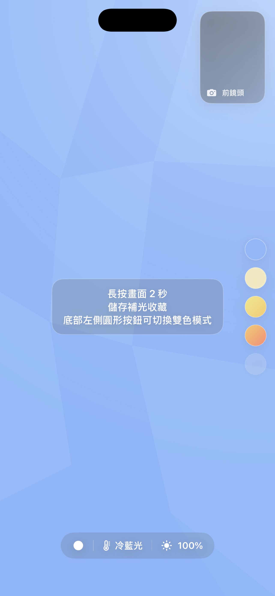
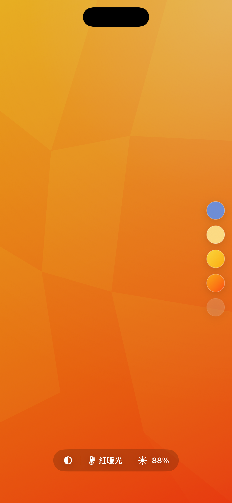

一開啟就是補光燈
Fill Light Color keeps the screen itself as the light source. Swipe to tune color temperature and brightness, preview your face with the front camera, and save useful lighting setups for the next shoot.
Swipe through cool blue, natural white, warm yellow, and red-warm tones for different skin, desk, and product lighting needs.
Check the lighting effect while adjusting the screen, then hide the preview when you want a clean full-screen light.
Use a layered two-color light for richer mood, and long press to save brightness and color setups you use often.
- 自拍補光
- 視訊補光
- 人像柔光
- 商品拍攝補光
- 桌面螢幕燈
Actual app screens
These screenshots show the current app interface in use: color presets, camera preview, brightness level, and the dual-color light mode.


iPhone 補光常見問題
No extra light panel is required. Fill Light Color is designed for quick, close-range lighting when another iPhone is already nearby.
如何把 iPhone 當成自拍補光燈？
在另一支 iPhone 開啟 Fill Light Color，把螢幕放在相機附近，再調整亮度與冷暖色溫，直到臉部陰影變得自然。
可以用於夜間視訊或直播嗎？
可以。將手機放在視訊鏡頭旁作為近距離柔光，暖色適合膚色，冷色則適合偏白或更清晰的畫面風格。
可以替商品近拍補光嗎？
適合飾品、模型、食品與桌面小物近拍。單色光可柔化陰影，雙色模式則可增加背景與輪廓的色彩層次。
Download Fill Light Color
Use it as a quick selfie light, a small video-call light, or a compact soft light for close-up photos when you only have your iPhone nearby.